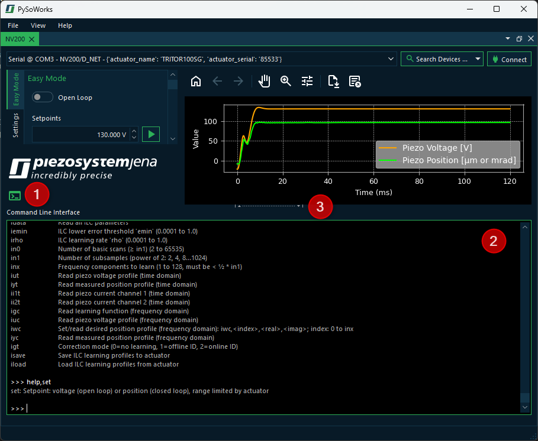

7. Command Console
7.1. Showing / Hiding the Command Console
The software has an integrated command console that allows you to interact with the system using text-based commands like you would do with a serial console application like HTerm. This console provides a way to control the piezo actuator or access features that are not supported by the graphical user interface (GUI) yet.
To show or hide the console, just click the Command Console button ❶. This will show the command console ❷ at the bottom of the window. You can click and drag the splitter handle ❸ to resize the console area to your liking.
Attention
Entering commands in the console bypasses all safety features of the GUI. This means you should be careful when issuing commands, as they can have immediate and potentially harmful effects on the system. Because the commands bypass the GUI, the state of the system shown in the GUI may not reflect the actual state of the actuator after executing a command.
7.2. Entering commands
Entering commands works like in a terminal application. You can type your command and press the Enter key to send it. The command syntax is similar to the one used in the NV200 firmware, so you can use the same commands as you would in a serial terminal.
7.2.1. Command Syntax
- Commands with a single parameter:
Use the following format:
<command>,<value>\rExample:
cl,0\r- Commands with an index and a value:
Use this format:
recsrc,0,1\r- Read-only commands or commands without parameters:
To read back a value or issue a command without a value, use:
<command>\rExample:
meas\r
7.2.2. Clearing the Console
To clear the console output, you can use the cls command:
cls\r
7.2.3. Console history
The console supports a command history feature, allowing you to scroll through previously entered commands using the ↑ and ↓ arrow keys.
7.3. Getting Help
The console has an internal help command that lists all available commands with their syntax and a short description:
help\r
If you know the command name, you can also get help for a specific command by typing:
help,<command>\r
For example:
help,cl\r
This will output:
cl: Loop mode (0=open loop, 1=closed loop)
7.4. List of available commands
This is the list of available commands:
Command |
Description |
|---|---|
s |
Print full command list |
reset |
Hardware-reset of the controller |
fenable |
Enable/disable full range voltage sweep during power-up (0=disabled, 1=enabled) |
sinit |
Set initial actuator position after power-up (0 to 100 %) |
set |
Setpoint: voltage (open loop) or position (closed loop), range limited by actuator |
setst |
Smooth setpoint: setst,<value1>=Setpoint,<value2>=JumpTime; same rules as ‘set’ |
meas |
Read position (with sensor) or piezo voltage (no sensor) |
imeas |
Read measured piezo current (0=channel 1, 1=channel 2) |
ctrlmode |
Controller mode (0=PID, 1=ILC identification, 2=ILC feedforward, 3=ILC feedback) |
temp |
Read heat sink temperature |
stat |
Read status register |
posmin |
Lower motion range limit |
posmax |
Upper motion range limit |
avmin |
Lower voltage range limit |
avmax |
Upper voltage range limit |
modsrc |
Setpoint source (0=USB/Ethernet, 1=Analog In, 2=SPI, 3=AWG) |
monsrc |
Analog output source (0=position closed loop, 1=setpoint, 2=piezo voltage, 3=position error, 4=abs(position error), 5=position open loop, 6=piezo current 1, 7=piezo current 2) |
desc |
Actuator description (type such as ‘TRITOR100SG’) |
acserno |
Actuator serial number |
acmeasure |
Actuator position sensor type (0=none, 1=straingauge, 2=capacitive, 3=LVDT) |
cl |
Loop mode (0=open loop, 1=closed loop) |
sr |
Slew rate limit (0.0000008 to 2000.0 %/ms; 2000=disabled) |
kp |
PID proportional gain (0 to 10000) |
ki |
PID integral gain (0 to 10000) |
kd |
PID differential gain (0 to 10000) |
tf |
PID differential term (time constant) |
pcf |
PID feedforward gain: pcf,<position_gain>,<velocity_gain>,<acceleration_gain> (acceleration scaled internally by 1/1,000,000) |
setlpon |
Enable/disable setpoint lowpass filter (0=off, 1=on) |
setlpf |
Setpoint lowpass cutoff frequency (1 to 10000 Hz) |
notchon |
Enable/disable notch filter (0=off, 1=on) |
notchf |
Notch filter frequency (1 to 10000 Hz) |
notchb |
Notch filter bandwidth (-3dB) (1 to 10000 Hz; max = 2 * notchf) |
poslpon |
Enable/disable position lowpass filter (0=off, 1=on) |
poslpf |
Position lowpass cutoff frequency (1 to 10000 Hz) |
grun |
Start/stop AWG (0=stop, 1=start) |
gsarb |
AWG start index (0 to 1023) |
gearb |
AWG end index (0 to 1023) |
gcarb |
AWG cycles (0=infinite, 1 to 65535) |
goarb |
AWG offset index (0 to 1023) |
giarb |
Read current AWG index |
gtarb |
Output sampling factor (1 to 65535; sample time = factor * 50µs) |
gbarb |
Write AWG buffer in % units (index: 0 to 1023, value: 0.0 to 100.0) |
gparb |
Write AWG buffer in length units (index: 0 to 1023, value: posmin to posmax) |
gsave |
Save AWG buffer to EEPROM |
gload |
Load AWG buffer from EEPROM |
recsrc |
Set data recorder source: recsrc,<ch>,<src>; ch: 0=A, 1=B; src: 0=position, 1=setpoint, 2=voltage, 3=error, 4=abs(error), 5=position (open loop), 6=piezo current 1, 7=piezo current 2) |
recast |
Recorder autostart (0=off, 1=start on set, 2=start on grun) |
recstr |
Recorder stride (store every nth value) (1 to 65535) |
reclen |
Recorder length (0 to 6144; 0=infinite loop) |
recrun |
Start/stop recorder (0=stop, 1=start) |
recidx |
Read current recorder write index |
recout |
Read recorder by index: recout,<ch>,<index>,<value> |
recoutf |
Read full recorder buffer (comma-separated) |
trgfkt |
Trigger input function (0=none, 1=AWG start, 2=AWG step, 3=AWG sync, 4=ILC sync, 5=recorder start) |
trgedg |
Trigger edge mode (0=off, 1=rising, 2=falling, 3=both) |
trgsrc |
Trigger signal source (0=position, 1=setpoint) |
trgss |
Trigger start position (posmin+0.001 to posmax-0.001) |
trgse |
Trigger stop position (posmin+0.001 to posmax-0.001) |
trgsi |
Trigger step size (0.001 to posmax-0.001) |
trglen |
Trigger pulse length in samples (0 to 255, time = length * 50µs) |
spisrc |
SPI return source (0=0x0000, 1=position, 2=setpoint, 3=voltage, 4=error, 5=abs(error), 6=position open loop, 7=piezo current 1, 8=piezo current 2, 9=test 0x5A5A) |
spitrg |
SPI interrupt source (0=internal, 1=SPI) |
spis |
SPI setpoint format (0=hex, 1=decimal, 2=stroke/voltage) |
idata |
Read all ILC parameters |
iemin |
ILC lower error threshold ‘emin’ (0.0001 to 1.0) |
irho |
ILC learning rate ‘rho’ (0.0001 to 1.0) |
in0 |
Number of basic scans (≥ in1) (2 to 65535) |
in1 |
Number of subsamples (power of 2: 2, 4, 8…1024) |
inx |
Frequency components to learn (1 to 128, must be < ½ * in1) |
iut |
Read piezo voltage profile (time domain) |
iyt |
Read measured position profile (time domain) |
ii1t |
Read piezo current channel 1 (time domain) |
ii2t |
Read piezo current channel 2 (time domain) |
igc |
Read learning function (frequency domain) |
iuc |
Read piezo voltage profile (frequency domain) |
iwc |
Set/read desired position profile (frequency domain): iwc,<index>,<real>,<imag>; index: 0 to inx |
iyc |
Read measured position profile (frequency domain) |
igt |
Correction mode (0=no learning, 1=offline ID, 2=online ID) |
isave |
Save ILC learning profiles to actuator |
iload |
Load ILC learning profiles from actuator |